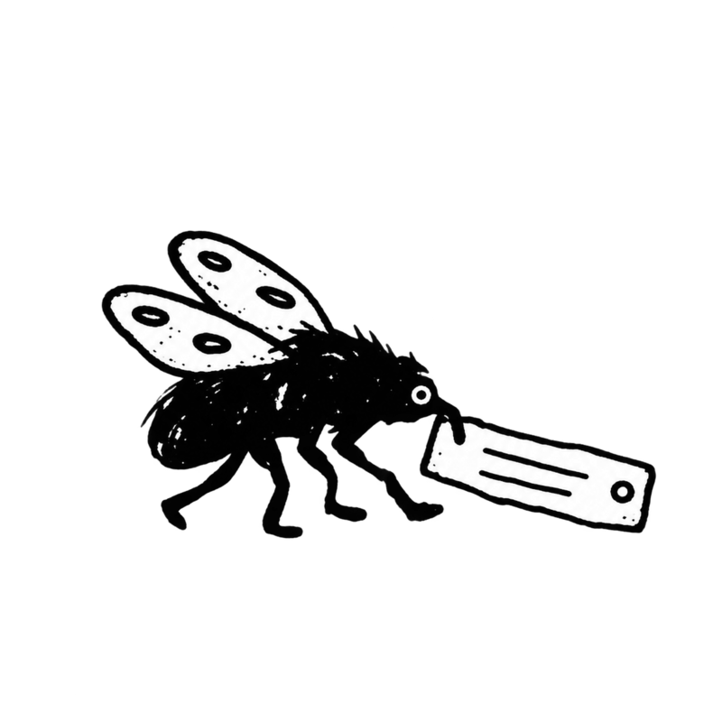
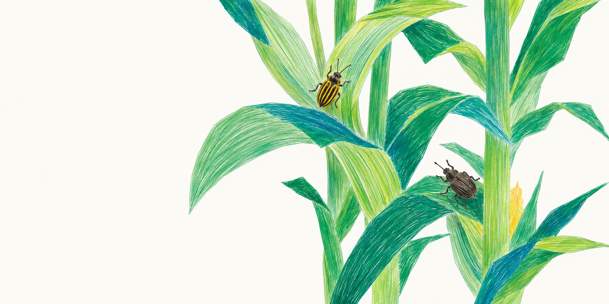
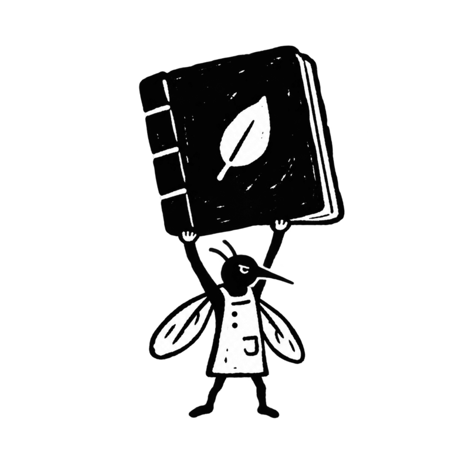
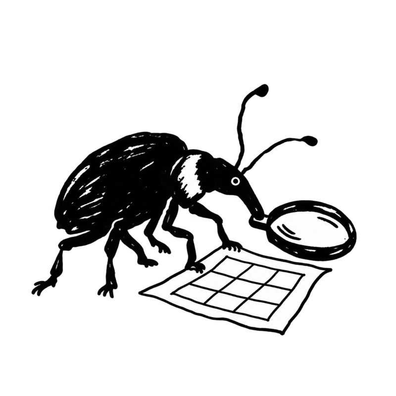
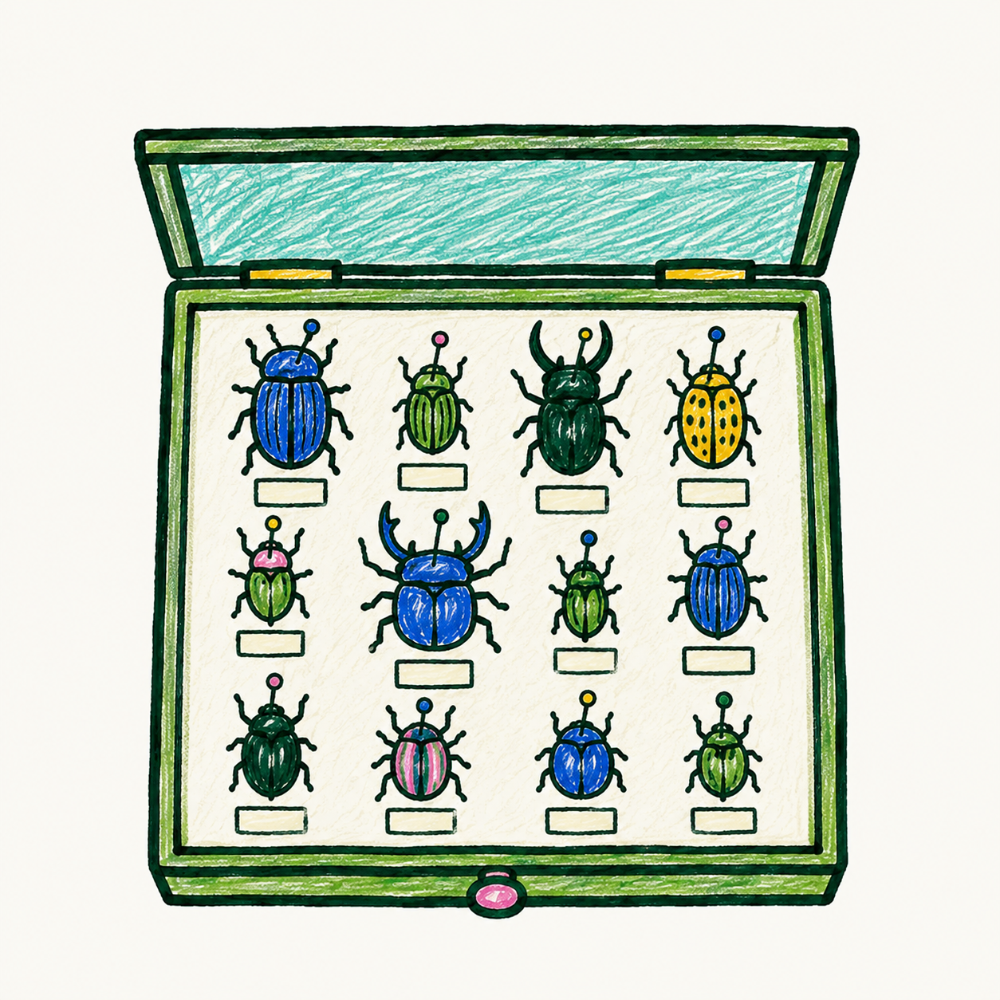
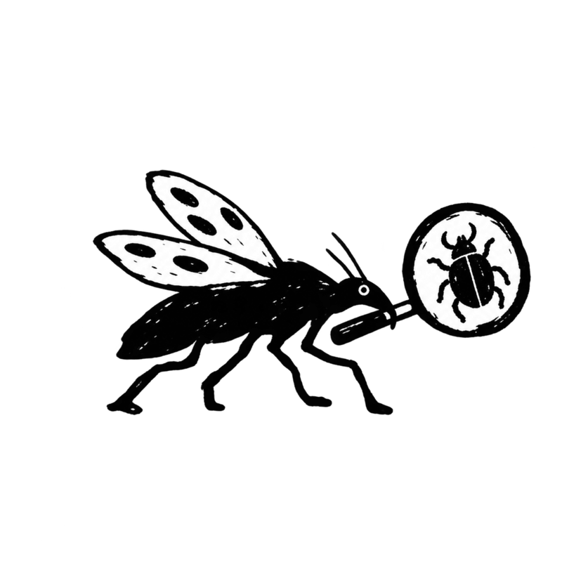

EntoLabel
Create clean collection and determination labels from Excel or CSV, ready to print on A4.
Open EntoLabelmade for real collections
Free and open-source tools for field notes, data cleaning, identification and labels—built by and for people who care about insects.

diurnal
on tassel
(v. common)
Corn field edge
6 June 2026
clouds, warm
choose what you need today
Start with one tool or let the same familiar spreadsheet carry your work from the field to the collection drawer.

Create clean collection and determination labels from Excel or CSV, ready to print on A4.
Open EntoLabel
Record collecting events, localities and specimens in the field—even from your phone.
Try EntoField
Find missing values, inconsistent formats and coordinates that need attention.
Try EntoData Doctor
Organize specimen boxes visually, track storage locations and find specimens across your collection.
Try EntoBox
Document identifications, evidence and determination history without losing context.
On the roadmapEntoField, EntoData Doctor and EntoBox are working prototypes. You are welcome to try them while they are still growing.
from field note to collection record
Observations, collecting events, photos and context.
Structure and standards make your records reusable.
Names, evidence and determinations stay connected.
Accurate labels turn data into collection records.
Keep specimens findable in boxes and storage.
built around specimens, not platforms
EntoKit is a growing collection of focused tools for field entomologists, students, private collectors and small scientific collections. It keeps familiar files at the centre, so your data remains understandable, portable and yours.
use it · test it · help it grow
EntoKit is an open-source toolkit created and maintained by Sanny. It is still young, so you are warmly invited to try the tools with real specimen data, share feedback and help shape what comes next.
View source on GitHub